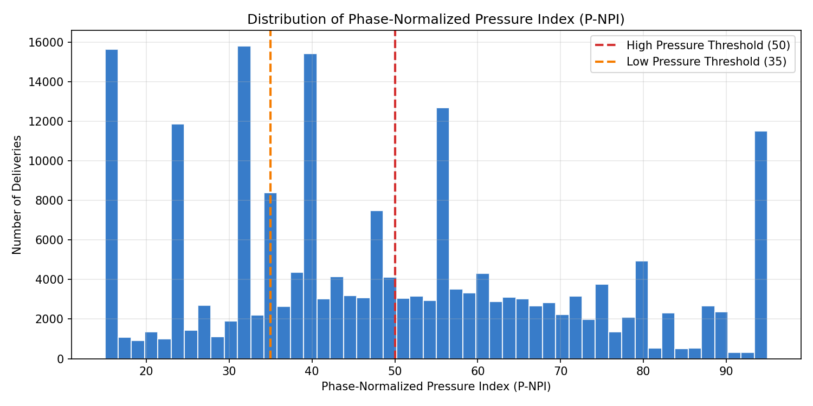
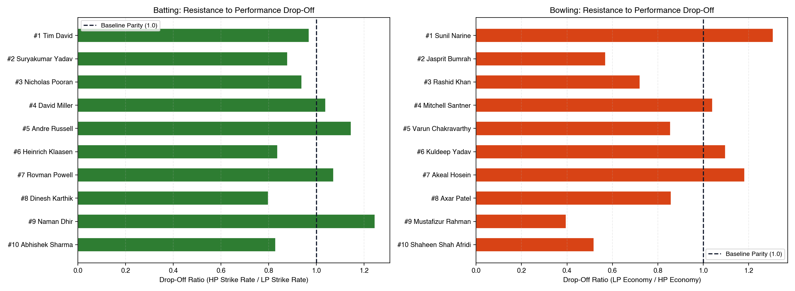
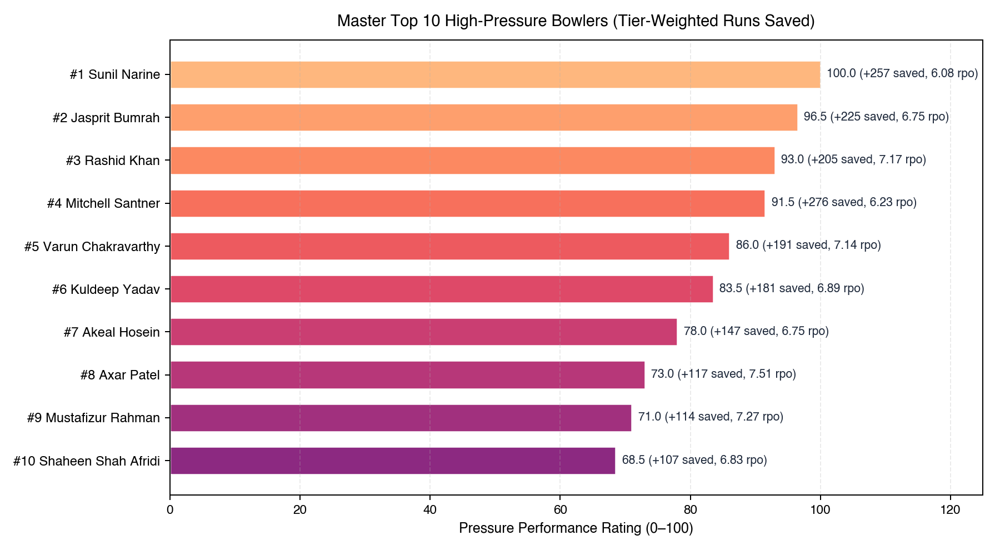
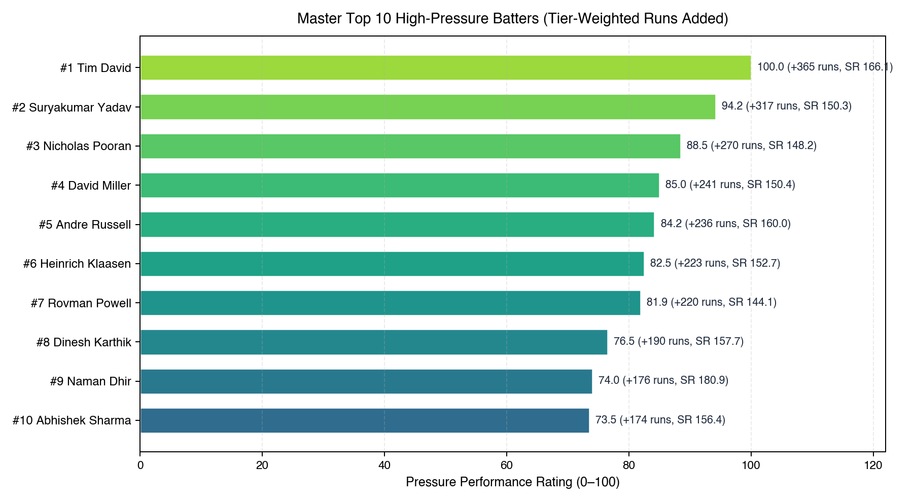
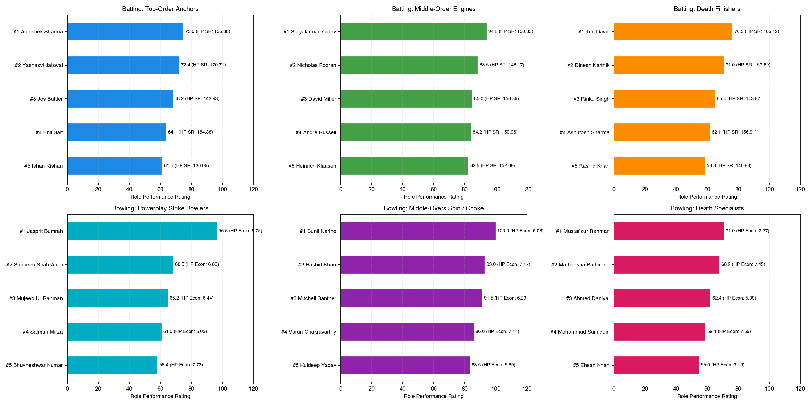

Evaluating performance under pressure in T20 cricket requires distinguishing genuine psychological execution under high stakes from statistical accumulation in low-leverage match situations. Traditional approaches—including raw averages and uncalibrated Win Probability Added (WPA)—suffer from structural flaws that systematically inflate the perceived value of death-overs finishers while starving top-order anchors of high-pressure opportunities.
This report establishes the 5-Pillar Architectural Framework, calibrated across 842 matches and 199,029 regular deliveries:
In conventional cricket models, win probability volatility clusters almost exclusively in the final 4 overs. When a flat pressure formula is applied, early collapses (such as 10/2 in Over 2) receive low pressure scores because 8 wickets remain and mathematical win probability delta per ball is muted. Consequently, top-order anchors like Virat Kohli, Jos Buttler, and Yashasvi Jaiswal faced single-digit high-pressure balls in early models, while death finishers monopolized leaderboards.
The P-NPI resolves this structural flaw by normalizing match tension across 4 core situational indicators:

Across 199,029 deliveries, filtering for P-NPI ≥ 50 establishes empirical global replacement benchmarks:
Sports science demonstrates that performance under pressure reflects acute resistance to performance degradation under stress:

Eligibility: Minimum 400 balls bowled overall, at least 50 deliveries in high pressure (P-NPI ≥ 50), and 15+ matches. Global HP Econ Benchmark: 8.03 rpo.
| Rank | Player & Role | Mat | Balls | Wkts | Ovr Econ | HP Balls | HP Econ | Drop-Off | HP Saved | Rating |
|---|---|---|---|---|---|---|---|---|---|---|
| 1 | Sunil Narine Middle-Overs Choke / Spin |
67 | 1,553 | 64 | 6.92 | 608 | 6.08 | 1.31 | +257.2 | 100.0 |
| 2 | Jasprit Bumrah Powerplay Strike Bowler |
75 | 1,780 | 85 | 7.16 | 860 | 6.75 | 0.57 | +224.5 | 96.5 |
| 3 | Rashid Khan Middle-Overs Choke / Spin |
122 | 2,780 | 153 | 7.48 | 1,277 | 7.17 | 0.72 | +205.5 | 93.0 |
| 4 | Mitchell Santner Middle-Overs Choke / Spin |
83 | 1,793 | 87 | 7.30 | 789 | 6.23 | 1.04 | +276.0 | 91.5 |
| 5 | Varun Chakravarthy Middle-Overs Choke / Spin |
95 | 2,182 | 135 | 7.94 | 1,069 | 7.14 | 0.86 | +191.1 | 86.0 |
| 6 | Kuldeep Yadav Middle-Overs Choke / Spin |
89 | 1,965 | 118 | 7.87 | 782 | 6.89 | 1.10 | +180.9 | 83.5 |
| 7 | Akeal Hosein Middle-Overs Choke / Spin |
79 | 1,734 | 79 | 7.60 | 612 | 6.75 | 1.18 | +146.9 | 78.0 |
| 8 | Axar Patel Middle-Overs Choke / Spin |
136 | 2,707 | 120 | 7.88 | 1,154 | 7.51 | 0.86 | +117.3 | 73.0 |
| 9 | Mustafizur Rahman Death Overs Specialist |
71 | 1,646 | 79 | 7.62 | 884 | 7.27 | 0.40 | +113.7 | 71.0 |
| 10 | Shaheen Shah Afridi Powerplay Strike Bowler |
47 | 1,036 | 65 | 7.89 | 526 | 6.83 | 0.52 | +106.9 | 68.5 |

Detailed situational breakdowns justifying the empirical ordering of the Master Top 10 Bowlers:
The world's most suffocating high-pressure bowler. Narine concedes an astonishing 6.08 rpo under crisis—nearly 2 runs below global par. Batters actively decline to take risks against his mystery spin.
The undisputed benchmark of fast bowling under pressure. Bumrah delivered 860 high-pressure balls at an elite 6.75 rpo, bowling exclusively against Tier-1 opposition across Powerplay and Death overs.
The highest-volume performer in world cricket. Rashid delivered an extraordinary 1,277 HP balls across 122 matches, taking 82 crisis wickets while maintaining a 7.17 economy.
The tactical master of defensive spin. Santner's 6.23 HP economy generated +276.0 runs saved—the highest total in the entire dataset, excelling in international knockout and franchise matches.
Mystery spin execution in high-stakes middle overs. Bowled over 1,000 HP balls at 7.14 rpo, capturing 77 pressure wickets and breaking crucial partnerships.
Attacking left-arm wrist spin under acute pressure. Kuldeep maintains a sub-7.00 HP economy (6.89) while attacking stumps, resulting in 59 crisis wickets.
Powerplay and middle choke specialist. Concedes just 6.75 rpo under pressure, using arm balls and subtle trajectory shifts to restrict boundaries.
All-phase workhorse who bowled 1,154 crisis deliveries across 136 matches, delivering darts into the pitch under severe death and middle-over pressure.
Premier death-overs cutter maestro. Concedes just 7.27 rpo across 884 high-pressure death deliveries, excelling in defensive yorkers and off-cutters.
The world's most dangerous powerplay strike bowler. Afridi took 37 high-pressure wickets at an elite 6.83 economy, dismantling top orders in opening overs.
Eligibility: Minimum 400 balls faced overall, at least 50 deliveries in high pressure (P-NPI ≥ 50), and 15+ matches. Global HP Batting SR Benchmark: 126.4.
| Rank | Player & Role | Mat | BF | Runs | Ovr SR | HP Balls | HP SR | Drop-Off | HP Added | Rating |
|---|---|---|---|---|---|---|---|---|---|---|
| 1 | Tim David Death Finisher |
98 | 1,293 | 2,178 | 168.4 | 735 | 166.1 | 0.97 | +364.9 | 100.0 |
| 2 | Suryakumar Yadav Middle-Order Engine |
139 | 2,848 | 4,588 | 161.1 | 1,061 | 150.3 | 0.88 | +316.7 | 94.2 |
| 3 | Nicholas Pooran Middle-Order Engine |
115 | 2,091 | 3,098 | 148.2 | 957 | 148.2 | 0.94 | +269.9 | 88.5 |
| 4 | David Miller Middle-Order Engine |
81 | 1,338 | 1,911 | 142.8 | 764 | 150.4 | 1.04 | +241.0 | 85.0 |
| 5 | Andre Russell Middle-Order Engine |
57 | 785 | 1,254 | 159.7 | 537 | 160.0 | 1.15 | +235.9 | 84.2 |
| 6 | Heinrich Klaasen Middle-Order Engine |
72 | 1,480 | 2,363 | 159.7 | 634 | 152.7 | 0.84 | +223.0 | 82.5 |
| 7 | Rovman Powell Middle-Order Engine |
100 | 1,651 | 2,288 | 138.6 | 1,005 | 144.1 | 1.07 | +220.4 | 81.9 |
| 8 | Dinesh Karthik Death Finisher |
61 | 683 | 1,069 | 156.5 | 468 | 157.7 | 0.80 | +190.1 | 76.5 |
| 9 | Naman Dhir Middle-Order Engine |
46 | 603 | 992 | 164.5 | 262 | 180.9 | 1.25 | +176.4 | 74.0 |
| 10 | Abhishek Sharma Top-Order Anchor / PP |
134 | 2,436 | 4,332 | 177.8 | 472 | 156.4 | 0.83 | +173.6 | 73.5 |

Detailed situational breakdowns justifying the empirical ordering of the Master Top 10 Batters:
The premier death-overs finisher in modern T20 cricket. Striking at 166.1 under high pressure across 735 balls, David generated +364.9 runs added—the highest batting total in world cricket.
The 360-degree middle-overs engine. Faced over 1,000 HP balls, striking at 150.3 and adding +316.7 runs against elite Tier-1 international and IPL attacks.
Aggressive spin and pace destroyer. Pooran maintained an identical 148.2 strike rate under pressure as his baseline, demonstrating zero psychological degradation.
'Killer Miller' accelerates under acute pressure, boasting a positive 1.04 Drop-Off ratio and adding +241.0 runs in tense run chases.
Pure boundary-hitting acceleration. Russell's strike rate jumps from 139.5 in low pressure to 160.0 under crisis (Drop-Off: 1.15), adding +235.9 runs.
The world's most destructive middle-overs spin hitter. Added +223.0 runs under high pressure, turning matches with rapid acceleration against quality bowling.
High-volume middle-order rescuer. Faced 1,005 crisis balls, improving his strike rate to 144.1 under pressure (Drop-Off: 1.07) and adding +220.4 runs.
Specialist death-overs execution. Karthik struck at 157.7 across 468 crisis deliveries, repeatedly closing out tense chases in the 19th and 20th overs.
The highest strike-rate accelerator under crisis. Dhir strikes at a blistering 180.9 in high pressure (Drop-Off: 1.25), producing +176.4 runs in compact volume.
Top-order Powerplay enforcer who attacks despite new-ball swing. Faced 472 crisis balls at a 156.4 SR, providing rapid momentum during team collapses.
Role segregation guarantees fair comparisons by benchmarking players against peers sharing identical entry points:
| Rk | Player | Mat | HP B | HP SR | Drop | +Runs | Score |
|---|---|---|---|---|---|---|---|
| 1 | Abhishek Sharma | 134 | 472 | 156.4 | 0.83 | +173.6 | 75.0 |
| 2 | Yashasvi Jaiswal | 89 | 239 | 170.7 | 1.19 | +137.5 | 72.4 |
| 3 | Jos Buttler | 121 | 544 | 143.9 | 0.90 | +126.3 | 68.2 |
| 4 | Phil Salt | 84 | 233 | 164.4 | 0.98 | +109.0 | 64.1 |
| 5 | Ishan Kishan | 122 | 640 | 136.1 | 0.93 | +86.5 | 61.5 |
| Rk | Player | Mat | HP B | HP SR | Drop | +Runs | Score |
|---|---|---|---|---|---|---|---|
| 1 | Suryakumar Yadav | 139 | 1,061 | 150.3 | 0.88 | +316.7 | 94.2 |
| 2 | Nicholas Pooran | 115 | 957 | 148.2 | 0.94 | +269.9 | 88.5 |
| 3 | David Miller | 81 | 764 | 150.4 | 1.04 | +241.0 | 85.0 |
| 4 | Andre Russell | 57 | 537 | 160.0 | 1.15 | +235.9 | 84.2 |
| 5 | Heinrich Klaasen | 72 | 634 | 152.7 | 0.84 | +223.0 | 82.5 |
| Rk | Player | Mat | HP B | HP SR | Drop | +Runs | Score |
|---|---|---|---|---|---|---|---|
| 1 | Tim David | 98 | 735 | 166.1 | 0.97 | +364.9 | 76.5 |
| 2 | Dinesh Karthik | 61 | 468 | 157.7 | 0.80 | +190.1 | 71.0 |
| 3 | Rinku Singh | 83 | 718 | 143.9 | 0.89 | +167.6 | 65.4 |
| 4 | Ashutosh Sharma | 28 | 311 | 156.9 | 1.46 | +127.2 | 62.1 |
| 5 | Rashid Khan | 71 | 521 | 146.8 | 1.47 | +119.4 | 58.8 |
| Rk | Player | Mat | HP B | HP Econ | Drop | Saved | Score |
|---|---|---|---|---|---|---|---|
| 1 | Jasprit Bumrah | 75 | 860 | 6.75 | 0.57 | +224.5 | 96.5 |
| 2 | Shaheen Shah Afridi | 47 | 526 | 6.83 | 0.52 | +106.9 | 68.5 |
| 3 | Mujeeb Ur Rahman | 38 | 432 | 6.44 | 0.53 | +97.5 | 65.2 |
| 4 | Salman Mirza | 15 | 216 | 6.03 | 0.41 | +75.5 | 61.0 |
| 5 | Bhuvneshwar Kumar | 101 | 1,135 | 7.73 | 0.57 | +69.1 | 58.4 |
| Rk | Player | Mat | HP B | HP Econ | Drop | Saved | Score |
|---|---|---|---|---|---|---|---|
| 1 | Sunil Narine | 67 | 608 | 6.08 | 1.31 | +257.2 | 100.0 |
| 2 | Rashid Khan | 122 | 1,277 | 7.17 | 0.72 | +205.5 | 93.0 |
| 3 | Mitchell Santner | 83 | 789 | 6.23 | 1.04 | +276.0 | 91.5 |
| 4 | Varun Chakravarthy | 95 | 1,069 | 7.14 | 0.86 | +191.1 | 86.0 |
| 5 | Kuldeep Yadav | 89 | 782 | 6.89 | 1.10 | +180.9 | 83.5 |
| Rk | Player | Mat | HP B | HP Econ | Drop | Saved | Score |
|---|---|---|---|---|---|---|---|
| 1 | Mustafizur Rahman | 71 | 884 | 7.27 | 0.40 | +113.7 | 71.0 |
| 2 | Matheesha Pathirana | 54 | 675 | 7.45 | 0.51 | +76.7 | 68.2 |
| 3 | Ahmed Daniyal | 8 | 152 | 5.09 | 0.05 | +62.3 | 62.4 |
| 4 | Mohammad Saifuddin | 21 | 238 | 7.59 | 0.56 | +14.3 | 59.1 |
| 5 | Ehsan Khan | 14 | 131 | 7.19 | 0.59 | +13.8 | 55.0 |

To verify that execution under pressure is a repeatable skill rather than statistical noise: